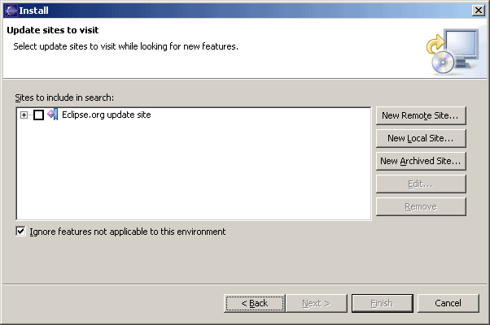
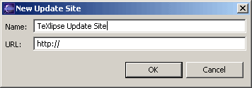
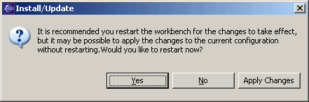

Before you can install the TeXlipse plugin you must have a working version of Eclipse. Eclipse 3.1 or better and Java 1.4.2 or better are required to run TeXlipse 1.1.0.
0. Delete the previous version of TeXlipse
Please make sure you do not have any previous version of TeXlipse in your
plugins folder.
In Windows systems the path might be:
C:\Program Files\eclipse\plugins
/usr/local/eclipse/plugins
The next time when you start Eclipse, please do it with the option -clean to make sure that there are no old values cached.
1. Select: Help > Software updates > Find and Install..
2. Select Search for new features to install and continue with next.
3. If there is an update site for TeXlipse, jump to step 5, otherwise select New Remote Site...

4. Give a name for a new TeXlipse update site and the address of it. The address of the update site is
http://texlipse.sourceforge.net
Accept the values by clicking OK
5. Select TeXlipse Update Site and click Next >

6.Select the version you want to install and continue with Next >.

7. You need to accept the license. If you do, continue by clicking Next >
8. Accept Install Location by clicking Finish
9. Eclipse warns you about the new feature. Acknowledge this by clicking Install
10. When the installation is ready, Eclipse recommends that you restart the program. After restarting, TeXlipse is ready to be configured. (see Part 2, Configuration)
